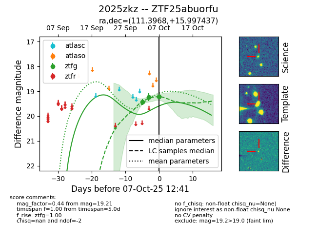
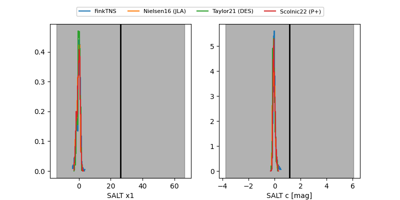

FINK: ZTF25abuorfu
Lasair: ZTF25abuorfu
ALeRCE: ZTF25abuorfu
TNS: 2025zkz
YSE: 2025zkz
ZTF25abuorfu (ztf,fink)
2025zkz (tns,yse)
equatorial (ra, dec) = (111.3968,+15.99744)
galactic (l, b) = (202.1980,+14.63566)


last ztfg=19.21
3 ztfg detections